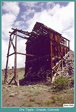
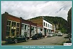
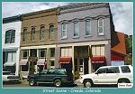
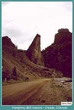
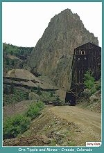
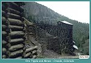
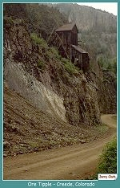
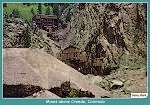
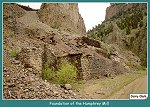

| For a brief few years, Creede was one of the most notorious of the Colorado mining settlements. Initially built in the narrow confines of East Willow Creek Canyon, the town eventually spilled out of the gulch into the broad plain west of town. Creede was actually comprised of three camps which eventually connected with each other. The original site in East Willow Creek Canyon expanded north up the canyon and formed a new town called North Creede. Continued development went south, out of the gulch. This settlement was referred to as Jimtown. Eventually the entire encampment stretched for over six miles. |
| Supposedly a miner named Nicholas Creede was prospecting in what was to become North Creede in 1890 when he hit a rich find and exclaimed "Holy Moses! I've struck it rich!" He was right, and the Holy Moses Mine became one of the most profitable holdings in the region. The stampede to the region really got underway after David Moffat bought the Holy Moses. |
| Early settlement was impeded by the lack of rail transportation. The earliest supply lines were by wagon from Del Norte. The Denver and Rio Grande had reached Wagon Wheel Gap, ten miles below Creede, in 1883. Financial problems due to overexpansion halted virtually all construction on the railroad for a number of years. While the railroad recovered in the late 1880's when David Moffat was it's President, the Creede branch was not completed during his tenure. Moffat was anxious for cheap rail transport to serve his mine holdings in the area. Moffat finally financed the construction of the trackage from Wagon Wheel Gap to Creede using his own funds. The line was completed in 1891 and Moffat turned operation of the extension over to the railroad. Moffat recouped his investment by receiving credits as a shipper. When he had recovered his costs, Moffat deeded the line to the railroad. |
| Once the railroad reached town, the crush of newcomers was more than the town could handle. Creede was truly a boom town. The Rio Grande had sleepers on sidings which could be rented by the night. The traffic into Creede placed tremendous demands on the railroad's equipment. Cars were spotted at every available siding from Creede all the way back to Del Norte. This situation continued until the price of silver plummeted in 1893. |
| Creede had more than it's share of notorious characters. The list included gambler Bob Ford, the killer of Jesse James. Ford apparently controlled much of the gambling in Creede from his Exchange gambling hall. He was shot in the back by a disgruntled patron, Ed O'Kelley. O'Kelley was tried and convicted for slaying Ford and put in jail. Shortly thereafter he was pardoned. Many in Creede felt O'Kelley had done the town a great service. |
| After Ford's death, Soapy Smith ran an extortion racket out of the Orleans Club. Smith had a cut of every gin joint, bawdy house and gambling casino in Creede. After the Silver Panic of 1893 slowed the economy of Creede to a crawl, Smith moved to the Klondike. His competitors in Skagway objected to him establishing the same type of business he ran in Creede. Smith was shot to death in 1898. |
| The night life in Creede went on until dawn. A famous poem was written by Cy Warman, who came to the region as a D&RG locomotive engineer, became the editor of the Creede Chronicle, and eventually moved back East to become editor of the New York Sun. It describes life during the Creede boom: |
Here's a land where all are equal
Of high or lowly birth -
A land where men make millions
Dug from the dreary earth.
Here meek and mild eyed burros
On mineral mountains feed,
It's day all day in the day-time
And there is no night in Creede.
The cliffs are solid silver
With wondrous wealth untold,
And the beds of running rivers
Are lined with purest gold.
While the world is filled with sorrow,
And hearts must break and bleed,
It's day all day in the day-time
And there is no night in Creede.
| The Silver Panic of 1893 was as devastating in Creede as it was in every other Colorado mining camp. The population of the town quickly declined as mining slowed down. The town partially recovered in the late 1890's, and with a recovering economy the Nelson Tunnel was driven to drain the Amethyst, Bachelor and Last Chance mines which had flooded in the years since 1893. The Humphrey, Commodore and Revenue Tunnel mills were built after the tunnel successfully drained the mines. For a brief few years Creede was revitalized. |
| In 1902 the narrow gauge line from Alamosa to Creede over Veta Pass was replaced with a new standard gauge line over La Veta Pass, 8 miles south of the original route. The old Class 171 Ten Wheelers, later designated T-12's, and Class 70 Consolidations, later reclassified as C-19's, were replaced by Class 500 Ten Wheelers and eventually C-48 Consolidations. |
| But the fortunes of the town followed the price of silver, and by the 1930's Creede was barely alive. The last passenger train left Creede in June, 1932. All scheduled service on the branch ended in 1949. Rail shipments of ore were last made from Creede in 1973. |
| Today Creede survives as a tourist center, but it's remote location guarantees it will never go the way of Telluride. If you're on a tour of Southwest Colorado, take some time to visit. It's off the beaten path, but well worth it. |
|
 |
Ore Tipple
Creede, Colorado (100k) |
|
 |
Creede Avenue
Creede, Colorado (75k) |
|
 |
Creede Avenue
Creede, Colorado (86k) |
|
 |
Humphrey Mill Remains
Creede, Colorado (77k) |
|
 |
Ore bins at the Nelson Tunnel
West Willow Creek Canyon Creede, Colorado (87k) |
|
 |
Ore Tipple and Mines
Creede, Colorado (70k) |
|
 |
Shaft House
West Willow Creek Canyon Creede, Colorado (101k) |
|
 |
Commodore Mine Workings
West Willow Creek Canyon (116k) |
|
 |
Foundation of the Humphrey Mill
(115k) |